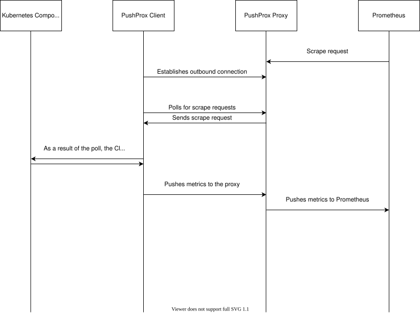

|
これは未公開の文書です SUSE® Rancher Manager v2.15 (Unreleased). |
監視の仕組み
1.アーキテクチャの概要
*以下のセクションでは、Monitoring V2アプリケーションを通じてデータがどのように流れるかを説明します:*
Prometheus Operator
Prometheus Operatorは、ServiceMonitors、PodMonitors、およびPrometheusRulesの作成を監視します。Prometheusの設定リソースが作成されると、Prometheus Operatorは新しい設定をsyncするためにPrometheus APIを呼び出します。このセクションの最後にある図が示すように、Prometheus OperatorはPrometheusとKubernetesの間の仲介者として機能し、Prometheus APIを呼び出してPrometheusをKubernetes内の監視関連リソースとsyncさせます。
ServiceMonitors and PodMonitors
ServiceMonitorsとPodMonitorsは、監視が必要なターゲット（サービスやポッドなど）を宣言的に指定します。
-
ターゲットは、設定されたPrometheusのスクレイプ間隔に基づいて定期的にスクレイプされ、スクレイプされたメトリクスはPrometheusの時系列データベース（TSDB）に保存されます。
-
スクレイプを実行するために、ServiceMonitorsとPodMonitorsは、どのサービスやポッドをスクレイプするかを決定するラベルセレクターと、指定されたターゲットでスクレイプがどのように行われるかを決定するエンドポイントを定義します。例えば、TCP 10252でのscrape/metrics、IPアドレスx.x.x.xを介したプロキシです。
-
デフォルトでは、Monitoring V2には、対象のKubernetesクラスターのタイプに応じてデプロイされる、事前に設定されたエクスポーターが含まれています。詳細については、メトリクスのスクレイプと公開を参照してください。
PushProxの仕組み
-
特定の内部Kubernetesコンポーネントは、Monitoring V2の一部としてデプロイされたプロキシである*PushProx*を介してスクレイプされます。PushProxを介してPrometheusにメトリクスを公開するKubernetesコンポーネントは以下の通りです：
kube-controller-manager、kube-scheduler、etcd、および`kube-proxy`。 -
各PushProxエクスポーターに対して、すべてのターゲットノードに1つのPushProxクライアントをデプロイします。例えば、kube-controller-managerのためにすべてのcontrolplaneノードにPushProxクライアントをデプロイし、kube-etcdのためにすべてのetcdノードに、kubeletのためにすべてのノードにデプロイします。
-
エクスポーターごとに、正確に1つのPushProxプロキシをデプロイします。メトリクスをエクスポートするプロセスは次のとおりです：
-
PushProxクライアントは、PushProxプロキシとのアウトバウンド接続を確立します。
-
その後、クライアントはプロキシに対して、プロキシに入ってきたスクレイプリクエストをポーリングします。
-
プロキシがPrometheusからのスクレイプリクエストを受け取ると、クライアントはそれをポーリングの結果として認識します。
-
クライアントは内部コンポーネントをスクレイプします。
-
内部コンポーネントは、メトリクスをプロキシにプッシュすることで応答します。
-

PrometheusRules
PrometheusRulesは、ユーザーがアラートを発火させるべきメトリクスや時系列データベースクエリのルールを定義できるようにします。ルールは間隔で評価されます。
-
*記録ルール*は、収集された既存のシリーズに基づいて新しい時系列を作成します。これらは複雑なクエリを事前計算するために頻繁に使用されます。
-
*アラートルール*は特定のクエリを実行し、そのクエリが非ゼロ値に評価されるとPrometheusからアラートを発火させます。
アラートルーティング
Prometheusがアラートを発火させる必要があると判断すると、アラートは*Alertmanager*に転送されます。
-
アラートには、PromQLクエリ自体からのラベルと、初期のPrometheusRuleを指定する際に提供できる追加のラベルや注釈が含まれます。
-
アラートを受信する前に、Alertmanagerは設定で指定された*ルート*と*受信者*を使用して、すべての受信アラートが評価されるルーティングツリーを形成します。ルーティングツリーの各ノードは、Prometheusアラートに添付されたラベルに基づいて、追加のグルーピング、ラベリング、およびフィルタリングを指定できます。ルーティングツリーのノード（通常はリーフノード）は、到達したアラートを構成された受信者に送信する必要があることを指定することもできます。例えば、Slack、PagerDuty、SMSなどです。Alertmanagerは最初にアラートを*alertingDriver*に送信し、その後alertingDriverがアラートを適切な宛先に送信または転送します。
-
ルートと受信者は、Alertmanager Secretを介してKubernetes APIにも保存されます。Secretが更新されると、Alertmanagerも自動的に更新されます。ルーティングはラベルを介してのみ行われることに注意してください（注釈などを介してではありません）。
2.プロメテウスの動作
時系列データの保存
エクスポーターからメトリクスを収集した後、プロメテウスはローカルのディスク上の時系列データベースに時系列を保存します。プロメテウスはリモートシステムとオプションで統合できますが、`rancher-monitoring`は時系列データベースのためにローカルストレージを使用します。
保存された後、ユーザーはプロメテウスのクエリ言語であるPromQLを使用してこのTSDBをクエリできます。
PromQLクエリは、次の2つの方法のいずれかで視覚化できます：
-
プロメテウスのグラフUIにクエリを提供することによって、データのシンプルなグラフィカルビューが表示されます。
-
PromQLクエリと軸にラベルを付け、単位を追加し、色を変更し、代替の視覚化を使用する追加のフォーマット指示を含むGrafanaダッシュボードを作成することによって。
プロメテウスのためのルールの定義
ルールは、プロメテウスが特定のアクションを実行するために、定期的に`evaluationInterval`上で実行する必要があるクエリを定義します。例えば、アラートを発火させる（アラートルール）またはTSDBに存在する他のクエリに基づいてクエリを事前計算する（レコーディングルール）などです。これらのルールは、PrometheusRulesカスタムリソースにエンコードされています。PrometheusRuleカスタムリソースが作成または更新されると、プロメテウスオペレーターは変更を観察し、Prometheus APIを呼び出して、プロメテウスが現在定期的に評価しているルールのセットをsyncします。
PrometheusRuleは、1つ以上のRuleGroupを定義することを可能にします。各RuleGroupは、アラートルールまたはレコーディングルールを表すことができるRuleオブジェクトのセットで構成されています。以下のフィールドがあります：
-
新しいアラートまたはレコードの名前
-
新しいアラートまたはレコードのためのPromQL式
-
アラートまたはレコードに添付されるべきラベル（例：クラスター名や重大度）
-
アラートの通知に表示する必要がある追加の重要な情報をエンコードする注釈（例：要約、説明、メッセージ、ランブックURLなど）。このフィールドはレコーディングルールには必須ではありません。
ruleを評価すると、Prometheusは提供されたPromQLクエリを実行し、提供されたラベルを追加し、ルールに対して適切なアクションを実行します。ルールがアラートをトリガーすると、Prometheusは提供された注釈も追加します。例えば、提供されたPromQLクエリにラベルとして`team: front-end`を追加するアラートルールは、そのラベルを発火したアラートに追加し、Alertmanagerがアラートを正しい受信者に転送できるようにします。
アラートルールとレコーディングルール
Prometheusはアラートがアクティブであるかどうかの状態を維持しません。アラートは評価間隔ごとに繰り返し発火し、Alertmanagerにアラートをグループ化し、意味のある通知にフィルタリングさせます。
`evaluation_interval`定数は、Prometheusが時系列データベースに対してアラートルールを評価する頻度を定義します。`scrape_interval`と同様に、`evaluation_interval`もデフォルトで1分です。
ルールは一連のルールファイルに含まれています。ルールファイルにはアラートルールと記録ルールの両方が含まれていますが、アラートルールのみが評価後にアラートを発生させます。
記録ルールの場合、Prometheusはクエリを実行し、それを時系列として保存します。この合成時系列は、高価または時間のかかるクエリの結果を保存するのに役立ち、将来的により迅速にクエリできるようになります。
アラートルールはより一般的に使用されます。アラートルールが正の数に評価されるたびに、Prometheusはアラートを発生させます。
ルールファイルは、ユースケースに応じてアラートにラベルと注釈を追加します。
-
ラベルはアラートを識別する情報を示し、アラートのルーティングに影響を与える可能性があります。例えば、特定のコンテナに関するアラートを送信する際に、コンテナIDをラベルとして使用することができます。
-
注釈は、アラートがどこにルーティングされるかに影響を与えない情報を示します。例えば、ランブックやエラーメッセージです。
3.Alertmanagerの動作
Alertmanagerは、Prometheusサーバーなどのクライアントアプリケーションから送信されたアラートを処理します。以下のタスクを処理します：
-
アラートの重複排除、グループ化、および正しい受信者統合（メール、PagerDuty、またはOpsGenieなど）へのルーティング
-
アラートのサイレンシングと抑制
-
時間の経過に伴うアラートの追跡
-
アラートが現在発生しているか、解決されたかのステータスを送信する
alertingDriversによって転送されたアラート
alertingDriversがインストールされると、alertingDriverの設定に基づき、TeamsやSMSの受信者URLとして利用できる`Service`が作成されます。ReceiverのURLはalertingDriversを指しているため、Alertmanagerは最初にalertingDriverにアラートを送信し、その後alertingDriverがアラートを適切な宛先に転送または送信します。
受信者へのアラートのルーティング
Alertmanagerはアラートが送信される場所を調整します。特定のラベルが一致するかどうかに基づいて、アラートをグループ化し、発火させることができます。1つのトップレベルのルートはすべてのアラートを受け入れます。そこから、Alertmanagerは次のルートの条件に一致するかどうかに基づいてアラートを受信者にルーティングし続けます。
Rancher UIのフォームは2レベル深いルーティングツリーの編集のみを許可しますが、Alertmanager Secretを編集することで、より深くネストされたルーティング構造を構成できます。
複数の受信者の構成
Rancher UIのフォームを編集することで、Alertmanagerが通知システムにアラートを送信するために必要なすべての情報を持つReceiverリソースを設定できます。
AlertmanagerまたはReceiverの設定でカスタムYAMLを編集することで、複数の通知システムにアラートを送信することもできます。詳細については、Receiverの設定に関するセクションを参照してください。
4.Monitoring V2の特定コンポーネント
Prometheus Operatorは、ユーザーがクラスター上でこれらのカスタムリソースを作成および変更することによって、PrometheusおよびAlertmanagerインスタンスをデプロイおよび管理できる一連の カスタムリソース定義を導入します。
Prometheus Operatorは、Rancher UIで編集されたリソースと設定オプションのライブ状態に基づいて、Prometheusの設定を自動的に更新します。
デフォルトでデプロイされるリソース
デフォルトでは、 kube-prometheusプロジェクトによってキュレーションされた一連のリソースが、基本的なモニタリング/アラートスタックを設定するためにRancher Monitoringアプリケーションをインストールする際に、クラスターにデプロイされます。
このソリューションをサポートするためにクラスターにデプロイされるリソースは、 rancher-monitoring Helmチャートに見つけることができ、これはPrometheusコミュニティによって維持されている上流の kube-prometheus-stack Helmチャートを密接に追跡し、 CHANGELOG.mdで追跡される特定の変更があります。
デフォルトのエクスポーター
Monitoring V2は、Prometheusが保存するための追加のメトリクスを提供する3つのデフォルトエクスポーターをデプロイします：
-
node-exporter: LinuxホストのハードウェアおよびOSメトリクスを公開します。`node-exporter`に関する詳細情報は、 アップストリームのドキュメントを参照してください。 -
windows-exporter: WindowsホストのハードウェアおよびOSメトリクスを公開します（Windowsクラスターにのみデプロイされます）。`windows-exporter`に関する詳細情報は、 アップストリームのドキュメントを参照してください。 -
kube-state-metrics: Kubernetes APIに含まれるリソースの状態を追跡する追加のメトリクスを公開します（例：ポッド、ワークロードなど）。`kube-state-metrics`に関する詳細情報は、 アップストリームのドキュメントを参照してください。
ServiceMonitorsとPodMonitorsは、ここで定義されたように、これらのエクスポーターをスクレイプします。Prometheusはこれらのメトリクスを保存し、PrometheusのUIまたはGrafanaを介して結果をクエリできます。
記録ルール、アラートルール、およびAlertmanagerに関する詳細情報は、アーキテクチャセクションを参照してください。
Rancher UIで公開されているコンポーネント
モニタリングアプリケーションがインストールされると、Rancher UIで以下のコンポーネントを編集できるようになります：
| コンポーネント | コンポーネントの種類 | 編集の目的と一般的な使用例 |
|---|---|---|
ServiceMonitor |
カスタムリソース |
Kubernetesサービスを設定してカスタムメトリクスをスクレイプします。Prometheusカスタムリソース内のスクレイプ構成を自動的に更新します。 |
PodMonitor |
カスタムリソース |
Kubernetesポッドを設定してカスタムメトリクスをスクレイプします。Prometheusカスタムリソース内のスクレイプ構成を自動的に更新します。 |
Receiver |
Alertmanagerの設定ブロック（その一部） |
アラートを送信する場所（例：Slack、PagerDutyなど）や、アラートを送信するために必要な情報（例：TLS証明書、プロキシURLなど）を変更します。アラートマネージャーのカスタムリソースを自動的に更新します。 |
ルート |
Alertmanagerの設定ブロック（その一部） |
ラベルに基づいてアラートをフィルタリング、ラベル付け、グループ化し、適切なReceiverに送信するために使用されるルーティングツリーを変更します。アラートマネージャーのカスタムリソースを自動的に更新します。 |
PrometheusRule |
カスタムリソース |
アラートをトリガーする必要がある追加のクエリや、PrometheusのTSDB内にある既存のシリーズのマテリアライズドビューを定義します。 Prometheusのカスタムリソースを自動的に更新します。 |
PushProx
PushProxは、Prometheusがネットワーク境界を越えてメトリクスをスクレイプできるようにし、Kubernetesクラスター内の各ノードで内部Kubernetesコンポーネントのメトリクス用ポートを公開する必要がなくなります。
Kubernetesコンポーネントのメトリクスは一般的にクラスター内のノードのホストネットワークで公開されるため、PushProxは各ノードのhostNetwork上にクライアントのDaemonSetをデプロイし、Kubernetes API上にある単一のプロキシに対して外向きの接続を行います。その後、Prometheusはプロキシを介して各クライアントへのスクレイプリクエストをプロキシするように構成でき、これにより内部Kubernetesコンポーネントからメトリクスをスクレイプする際に、受信ノードポートを開く必要がなくなります。
詳細については、PushProxによるメトリクスのスクレイピングを参照してください。
5.メトリクスのスクレイピングと公開
スクレイプされるメトリクスの定義
ServiceMonitorsとPodMonitorsは、Prometheusがスクレイプすることを意図したターゲットを定義します。 Prometheusカスタムリソースは、Prometheusがメトリクスをスクレイプする場所を見つけるために使用すべきServiceMonitorsまたはPodMonitorsを指示します。
Prometheusオペレーターは、ServiceMonitorsとPodMonitorsを監視します。それらが作成または更新されたことを観察すると、Prometheus APIを呼び出してPrometheusカスタムリソース内のスクレイプ設定を更新し、ServiceMonitorsまたはPodMonitors内のスクレイプ設定とsyncを保ちます。このスクレイプ設定は、Prometheusにどのエンドポイントからメトリクスをスクレイプするか、そしてそれらのエンドポイントからのメトリクスにどのようにラベルを付けるかを指示します。
Prometheusは、デフォルトで1分ごとに`scrape_interval`スクレイプ設定で定義されたすべてのメトリクスをスクレイプします。
スクレイプ設定は、Rancher UIで公開されているPrometheusカスタムリソースの一部として表示できます。
Prometheusオペレーターがメトリクスのスクレイピングを設定する方法
Prometheusのデプロイメントまたはステートフルセットがメトリクスをスクレイピングし、Prometheusの設定はPrometheusカスタムリソースによって制御されます。PrometheusオペレーターはPrometheusおよびAlertmanagerリソースを監視し、それらが作成されると、ユーザー定義の設定でPrometheusまたはAlertmanagerのデプロイメントまたはステートフルセットを作成します。
PrometheusオペレーターがServiceMonitors、PodMonitors、およびPrometheusRulesが作成されるのを観察すると、Prometheusのスクレイプ設定を更新する必要があることを知ります。最初にPrometheusのデプロイメントまたはステートフルセットのボリューム内の設定およびルールファイルを更新することによって、Prometheusを更新します。次に、Prometheus APIを呼び出して新しい設定をsyncさせ、その結果、Prometheusのデプロイメントまたはステートフルセットがその場で修正されます。
Kubernetesコンポーネントメトリクスが公開される方法
Prometheusは、Prometheusが取り込むことができる形式で時系列データをエクスポートする エクスポータ,として知られるデプロイメントからメトリクスをスクレイピングします。Prometheusにおいて、時系列は同じメトリクスおよび同じラベル付き次元のストリームのタイムスタンプ付き値の集合で構成されます。
メトリクスのスクレイピング
以下のKubernetesコンポーネントは、Prometheusによって直接スクレイピングされます：
-
kubelet*
-
Traefik**
-
coreDns/kubeDns
-
kube-api-server
-
オプションで`hardenedKubelet.enabled`を使用してPushProxを使用できますが、それはデフォルトではありません。
-
RKE2クラスターでは、Traefikはデフォルトでデプロイされ、内部Kubernetesコンポーネントとして扱われます。
-
Kubernetesディストリビューションに基づくメトリクスのスクレイピング
メトリクスはKubernetesディストリビューションに基づいて異なる方法でスクレイピングされます。用語に関するヘルプについては、こちらを参照してください。詳細については、以下の表をご覧ください：
| Kubernetesコンポーネント | RKE2 | KubeADM | K3s |
|---|---|---|---|
kube-controller-manager |
rke2ControllerManager.enabled |
kubeAdmControllerManager.enabled |
k3sServer.enabled |
kube-scheduler |
rke2Scheduler.enabled |
kubeAdmScheduler.enabled |
k3sServer.enabled |
etcd |
rke2Etcd.enabled |
kubeAdmEtcd.enabled |
使用不可 |
kube-proxy |
rke2Proxy.enabled |
kubeAdmProxy.enabled |
k3sServer.enabled |
kubelet |
kubeletによって直接公開されたメトリクスを収集します |
kubeletによって直接公開されたメトリクスを収集します |
kubeletによって直接公開されたメトリクスを収集します |
Traefik* |
kubeletによって直接公開されたメトリクスを収集します |
使用不可 |
使用不可 |
coreDns/kubeDns |
coreDns/kubeDnsによって直接公開されたメトリクスを収集します |
coreDns/kubeDnsによって直接公開されたメトリクスを収集します |
coreDns/kubeDnsによって直接公開されたメトリクスを収集します |
kube-api-server |
kube-api-serverによって直接公開されたメトリクスを収集します |
kube-api-serverによって直接公開されたメトリクスを収集します。 |
kube-api-serverによって直接公開されたメトリクスを収集します |
-
RKE2クラスターでは、Traefikはデフォルトでデプロイされ、内部Kubernetesコンポーネントとして扱われます。
用語集
-
*kube-scheduler:*ポッド仕様の情報を使用して、ポッドを実行するノードを決定する内部Kubernetesコンポーネントです。
-
*kube-controller-manager:*ノード管理（ノードの障害を検出）、ポッドのレプリケーション、およびエンドポイントの作成を担当する内部Kubernetesコンポーネントです。
-
*etcd:*Kubernetesがすべてのクラスター情報の永続的なストレージに使用する分散型キー/バリューストアである内部Kubernetesコンポーネントです。
-
*kube-proxy:*APIサーバーを監視して、ポッド/サービスの変更を追跡し、ネットワークを最新の状態に保つ内部Kubernetesコンポーネントです。
-
*kubelet:*ノード上のポッドを監視し、それらが実行されていることを確認する内部Kubernetesコンポーネントです。
-
*Traefik:*リバースプロキシおよびロードバランサーとして使用できるKubernetes用のIngressコントローラーです。
-
*coreDns/kubeDns:*DNSを担当する内部Kubernetesコンポーネントです。
-
*kube-api-server:*他のマスターコンポーネントのためにAPIを公開する責任を持つ主要な内部Kubernetesコンポーネントです。